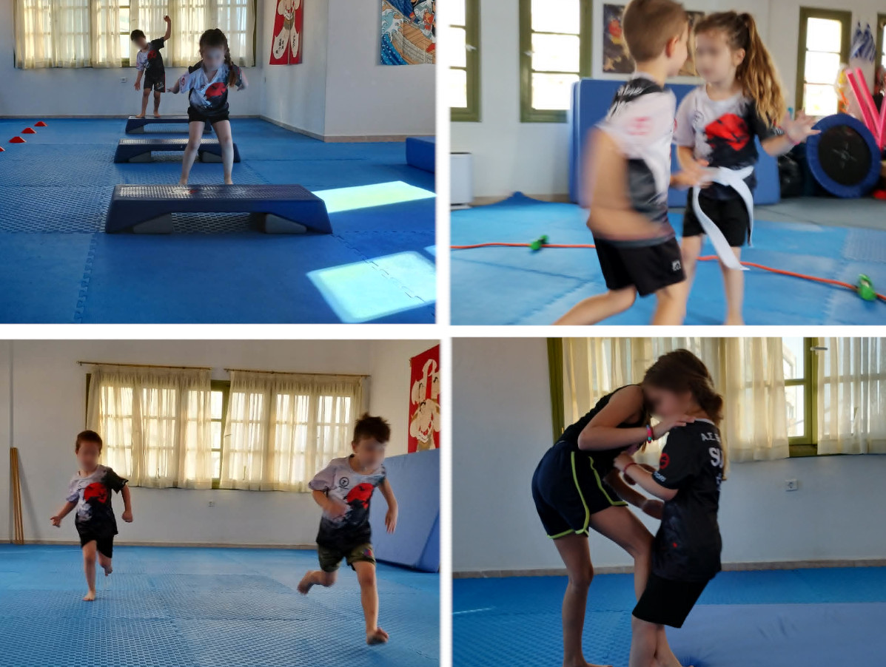

Η ολοκλήρωση των πρώτων μηνών λειτουργίας του τμήματος Sumo αποτελεί μια εξαιρετική ευκαιρία να κάνουμε έναν απολογισμό της πορείας των μικρών αθλητών μας και να παρουσιάσουμε τα αποτελέσματα μιας συστηματικής και επιστημονικά σχεδιασμένης προπονητικής διαδικασίας.
Όταν ξεκίνησαν οι προπονήσεις, τα παιδιά δεν είχαν προηγούμενη εμπειρία σε πολεμικές τέχνες ή αθλήματα επαφής. Πολλά δυσκολεύονταν ακόμη και σε βασικές κινητικές δεξιότητες, όπως η ισορροπία, ο σωστός τρόπος μετακίνησης, οι αλλαγές κατεύθυνσης, τα άλματα ή οι ασφαλείς πτώσεις. Χαρακτηριστικό είναι πως πέφτανε μόνα τους όταν βηματίζανε. Όλα αυτά είναι απολύτως φυσιολογικά, καθώς η κινητική ανάπτυξη των παιδιών βρίσκεται ακόμη σε εξέλιξη και απαιτεί σωστά ερεθίσματα, επανάληψη και κατάλληλη καθοδήγηση. Για τον λόγο αυτό, οι πρώτοι μήνες δεν επικεντρώθηκαν στις τεχνικές του Sumo. Η εκπαίδευση βασίστηκε σε έναν ολοκληρωμένο σχεδιασμό κινητικής μάθησης, ανάπτυξης φυσικών ικανοτήτων και σταδιακής εισαγωγής στις πολεμικές τέχνες.
Η κινητική μάθηση αποτελεί τη βάση κάθε αθλητικής δραστηριότητας. Μέσα από κατάλληλες ασκήσεις τα παιδιά αναπτύσσουν τον συντονισμό, την ισορροπία, την ιδιοδεκτικότητα, την κιναίσθηση και τον έλεγχο του σώματος.
Στους πρώτους μήνες δουλέψαμε συστηματικά:
Οι αλλαγές που παρατηρήθηκαν ήταν εντυπωσιακές. Παιδιά που στην αρχή έχαναν εύκολα την ισορροπία τους ή δίσταζαν να κινηθούν δυναμικά, σήμερα εκτελούν τις ίδιες ασκήσεις με αυτοπεποίθηση και σημαντικά μεγαλύτερη ακρίβεια.
Η ανάπτυξη της φυσικής κατάστασης έγινε σταδιακά και με απόλυτη ασφάλεια, ανάλογα με την ηλικία κάθε παιδιού.
Το πρόγραμμα περιλάμβανε:
Στο τέλος της περιόδου οι μικροί αθλητές μπορούν να συμμετέχουν σε απαιτητικές προπονήσεις, να διατηρούν υψηλό επίπεδο συγκέντρωσης και να ολοκληρώνουν ακόμη και περίπου 20 λεπτά συνεχόμενης αερόβιας δραστηριότητας (τρέξιμο), κάτι που στην αρχή φαινόταν ιδιαίτερα δύσκολο.
Ένα από τα σημαντικότερα αντικείμενα της εκπαίδευσης ήταν οι ασφαλείς πτώσεις (ukemi).
Η σωστή εκτέλεση μιας πτώσης προστατεύει το σώμα, όχι μόνο μέσα στο τατάμι, αλλά και στην καθημερινή ζωή.
Σήμερα τα παιδιά μπορούν να εκτελούν με ασφάλεια:
Η δεξιότητα αυτή αποτελεί μία από τις σημαντικότερες που μπορεί να αποκτήσει ένα παιδί στις πολεμικές τέχνες στα πέντε του έτη.
Παράλληλα με την κινητική ανάπτυξη και τη φυσική κατάσταση, προχώρησε και η τεχνική εκπαίδευση.
Οι αθλητές μας έχουν πλέον διδαχθεί:
Η εκμάθηση πραγματοποιήθηκε με προοδευτικό τρόπο, ώστε κάθε νέα δεξιότητα να βασίζεται στις προηγούμενες.
Η μεγαλύτερη επιτυχία δεν είναι ότι τα παιδιά έμαθαν περισσότερες τεχνικές.
Είναι ότι έμαθαν να συνεργάζονται. Έμαθαν να σέβονται τον συναθλητή τους, να υπακούν σε κανόνες, να προσπαθούν ακόμη και όταν κάτι δεν τους βγαίνει η άσκηση, να πέφτουν και να σηκώνονται ξανά. Απέκτησαν μεγαλύτερη αυτοπεποίθηση, καλύτερο αυτοέλεγχο και περισσότερη πειθαρχία, στοιχεία που συνοδεύουν κάθε ολοκληρωμένη παιδαγωγική διαδικασία στις πολεμικές τέχνες.
Ένα από τα σημαντικότερα μαθήματα που κατάφερα να περάσω στα παιδιά είναι πως οι αγώνες είναι ένα παιχνίδι. Σημασία έχει η συμμετοχή. Παιδιά που όταν πέφτανε κλαίγανε, τώρα σηκώνονται με πείσμα και ζητούν να ξαναπαίξουν.
Με τα παιδιά φυτέψαμε, φροντίσαμε τα πουλιά που έχει το κτήριο, μιλήσαμε για ιστορικά εθνικά θέματα, είδαμε φυτά από μικροσκόπιο και μάθαμε κάποια βασική γεωγραφία με χάρτες. Τα ίδια παιδιά φέρνανε θέματα προς συζήτηση, τα οποία δείχνουν υψηλή δυναμική στο νοητικό επίπεδο. Αυτά ήταν: ιαπωνικοί κήποι, αστρονομία, συμπεριφορά στο σχολείο, σχολιασμός άλλων δραστηριοτήτων φυσικής αγωγής, βίντεο πολεμικών τεχνών. Δεν μείναμε στην ύλη των πολεμικών τεχνών, διότι η εκπαίδευση δεν πρέπει να είναι στείρα, αλλά να δίνει ερεθίσματα για ανάπτυξη.
Η νέα αγωνιστική περίοδος θα αποτελέσει το επόμενο βήμα της εξέλιξης των αθλητών μας.
Το πρόγραμμα θα συνεχίσει να συνδυάζει την κινητική μάθηση, τη φυσική κατάσταση και την τεχνική εκπαίδευση, ενώ σταδιακά θα προστεθούν ακόμη πιο σύνθετες τεχνικές, περισσότερη τακτική και νέα προπονητικά ερεθίσματα.
Στόχος μας δεν είναι μόνο να δημιουργήσουμε καλούς αθλητές Sumo, οι οποίοι παλεύουν είτε πιάνοντας τα ρούχα, είτε τα χέρια, είτε το κεφάλι είτε το mawashi.
Στόχος μας είναι να βοηθήσουμε κάθε παιδί να αποκτήσει ένα δυνατό, υγιές και λειτουργικό σώμα, να αγαπήσει τον αθλητισμό και να αναπτύξει χαρακτήρα, αυτοπεποίθηση και σεβασμό. Να δημιουργήσουμε ανθρώπους που αγαπούν την άσκηση, σέβονται τον συναθλητή τους, δεν φοβούνται την προσπάθεια και αντιμετωπίζουν τις δυσκολίες με επιμονή.
Θέλω να ευχαριστήσω όλους τους γονείς για την εμπιστοσύνη τους και τους μικρούς αθλητές μας για την αφοσίωση, την προσπάθεια και το χαμόγελο που φέρνουν σε κάθε προπόνηση.
Οι πρώτοι μήνες ήταν μια καλή αρχή.
